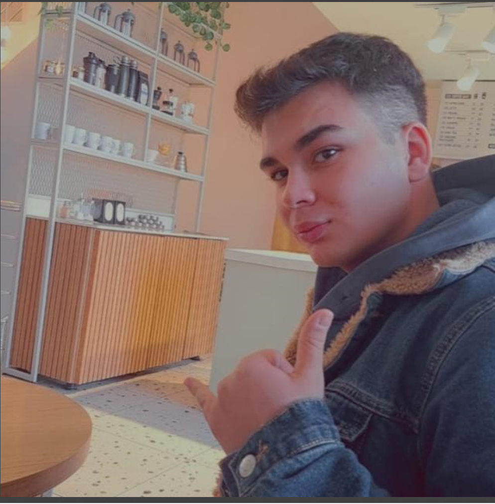

Hakkımda
Merhaba! Benim adım Mehmet. Teknoloji, bilgisayar bilimi ve web geliştirme konusunda tutkuluyum. İşte biraz bana dair bilgiler:
- Yaş: 21
- Konum: Türkiye, Ankara
- Hobiler: Oyun oynamak, güreş ve gezmek
Favori Hobim: Güreş
Güreş, lise yıllarımda benim için hem fiziksel hem de zihinsel bir meydan okuma olarak hayatımda önemli bir yer edindi. Hocamın teşvikiyle okul takımına girmemle başlayan bu serüven, beni birçok müsabakaya götürdü ve heyecan dolu anılarla doldu. Güreşte başarıyı tatmanın, takım arkadaşlarımla antrenman yapmanın ve her seferinde biraz daha iyi olabilmek için çalışmanın anlamını bu süreçte derinlemesine öğrendim.
Ankara’da katıldığım güreş müsabakalarında ilk üçe girmek, benim için gurur vericiydi ve motivasyonumu daha da artırdı. Bu deneyimin ardından Çorum’da daha büyük bir arenada kendimi gösterme fırsatım oldu. Ancak, bu müsabakada küçük bir hatam yüzünden "kötü üçüncü" olarak nitelendirebileceğimiz bir derece elde ettim ve elendim. Belki ufak bir yanlış adımdı ama bu bana çok şey öğretti. Güreşte, her hareketin, her pozisyonun büyük önemi olduğunu burada bir kez daha anlamış oldum.
Güreş, disiplini ve özveriyi gerektiriyor. Her bir müsabaka, yoğun antrenmanların sonucunda kazanılan bir meydan okuma. Hareketlerin doğru yapılması, antrenmanların sıkı bir şekilde yapılması ve rakibe karşı doğru stratejilerin geliştirilmesi, bu sporun ayrılmaz bir parçası. Bazen yenilgiler, bir sonraki aşama için büyük dersler oluyor; Çorum’daki bu deneyimim gibi. Güreş, bana sadece fiziksel bir güç değil, aynı zamanda sabır, azim ve stratejik düşünce yeteneği kazandırdı.
Güreşin hayatıma kattığı en büyük ders, kaybetmenin de kazanmanın bir parçası olduğunu ve her zorluğun beni daha güçlü kıldığını fark etmek oldu.
Bilgisayar Özelliklerim
- İşlemci: 4.Nesil Haswell Intel® Core™ i7-4710MQ
- RAM: 8GB DDR3L 1600MHz
- Ekran Kartı: 2GB nVIDIA GeForce GTX950M
- Depolama: 1x mSATA SSD + 1x HDD
CV'm
Kişisel Bilgiler
Adı Soyadı: Mehmet Karisli
Doğum Tarihi: 20.10.2003
Telefon: +90 544 691 9247
Email: musapmemo@gmail.com
Eğitim
Ostim Teknik Universitesi/lojistik
Yetenekler
- HTML, CSS
- Web Geliştirme